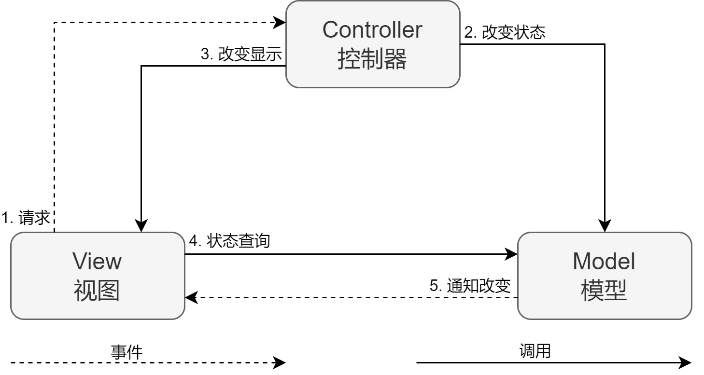
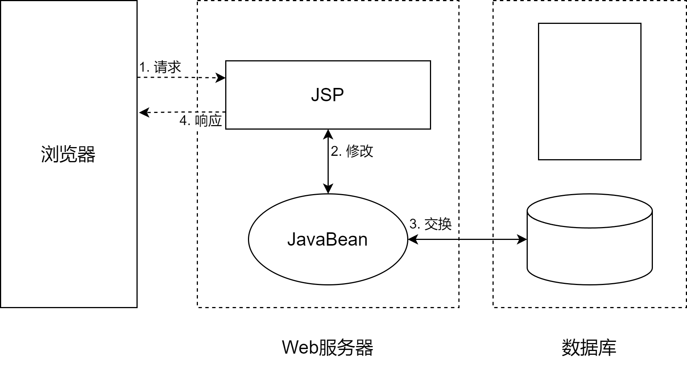
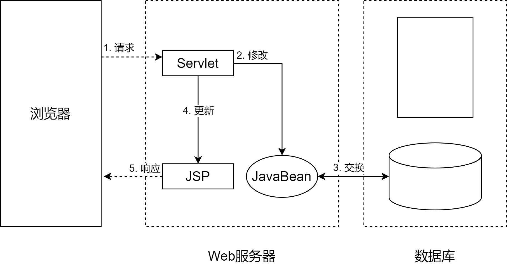
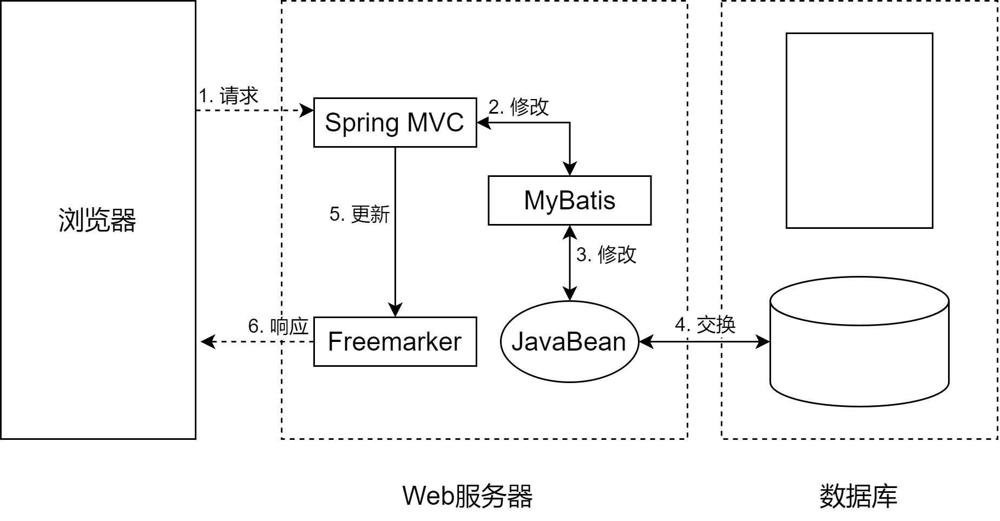

MVC设计模式⯐
OO设计原则
五大设计原则(SOLID):
-
单一职责原则 (Single Responsibility Principle)
- 每个方法或类应当做一件事情，或者只有一项职责。
-
开闭原则(Open Close Principle)
- 开闭原则就是说对扩展开放，对修改关闭。
-
里氏代换原则(Liskov Substitution Principle)
- 任何基类可以出现的地方，子类一定可以出现。
-
接口隔离原则(Interface Segregation Principle)
- 使用多个隔离的接口，比使用单个接口要好。
-
依赖倒转原则(Dependence Inversion Principle)
- 对接口编程，依赖于抽象而不依赖于具体。
OO设计模式
在 1994 年，由 Erich Gamma、Richard Helm、Ralph Johnson 和 John Vlissides 四人合著出版了一本名为 Design Patterns - Elements of Reusable Object-Oriented Software的书，该书首次提到了软件开发中设计模式的概念。
四位作者合称 四人小组（Gang of Four， GOF ）。他们所提出的设计模式主要是基于以下的面向对象设计原则。
-
对接口编程而不是对实现编程。
-
优先使用对象组合而不是继承。
设计模式（Design Pattern）代表了最佳的实践
- 就是设计过程中可以反复使用的、可以解决特定问题的设计方法
＊ 设计模式是前人留下的经验，相当于武侠小说中的武林秘籍，所谓的编程语言，就是内功招式。其实设计模式的核心就是高内聚，低耦合。
MVC设计模式
MVC模式（Model-View-Controller）是软件工程中的一种架构模式，把软件系统分为三个基本部分（软件架构）
模型（Model）
- 模型持有所有的数据、状态和程序逻辑，是应用程序的核心。
视图（View）
- 代表用户交互界面，用来显示数据。
控制器（Controller）
- 控制器( Controller)- 负责转发请求，对请求进行处理
MVC模式的目的是实现一种动态的程式设计，使后续对程序的修改和扩展简化，并且使程序某一部分的重复利用成为可能。
除此之外，此模式通过对复杂度的简化，使程序结构更加直观。

分工明确
- 使用MVC可以把数据库开发，程序业务逻辑开发，页面开发分开，每一层都具有相同的特征，方便以后的代码维护。方便多开发人员间的分工。
松耦合
- 视图层和业务层分离，这样就允许更改视图层代码而不用重新编译模型和控制器代码，同样，一个应用的业务流程或者业务规则的改变只需要改动MVC的模型层即可。
重用性高
视图控制模型分离， 提高代码重用性。
可移植性
因为模型是独立于视图的，所以可以把一个模型独立地移植到新的平台工作。需要做的只是在新平台上对视图和控制器进行新的修改。
-
清晰的构架以代码的复杂性为代价， 对小项目优可能反而降低开发效率。
-
运行效率相对较低。
-
控制层和表现层有时会过于紧密，导致没有真正分离和重用
JavaWeb与设计模式
Model1
控制器：JSP
视图：JSP
模型：JavaBean
优点
- 架构简单，比较适合小型项目开发。
缺点
- 从工程化角度看，它的局限性非常明显；JSP的职责不单一，身兼View和Controller两种角色，将控制逻辑职和表现逻辑混杂在一起，职责过重，代码的可复用性低，不便于维护。

Model2
控制器：Servlet
视图：JSP
模型：JavaBean
优点
- 职责清晰，各司其职，互不干扰，有利于组件的重用，适合大型的Web项目。
缺点
- 不适合小型项目、对开发人员要求更高。

SSM
控制器：Srping MVC
视图：Freemarker
模型：MyBatis/JavaBean
Spring提供：依赖注入、有效性校验、国际化等
Spring Boot：简化Spring项目配置
优点
- 职责清晰，各司其职，互不干扰，有利于组件的重用，适合大型的Web项目。
缺点
- 不适合小型项目、对开发人员要求更高。
